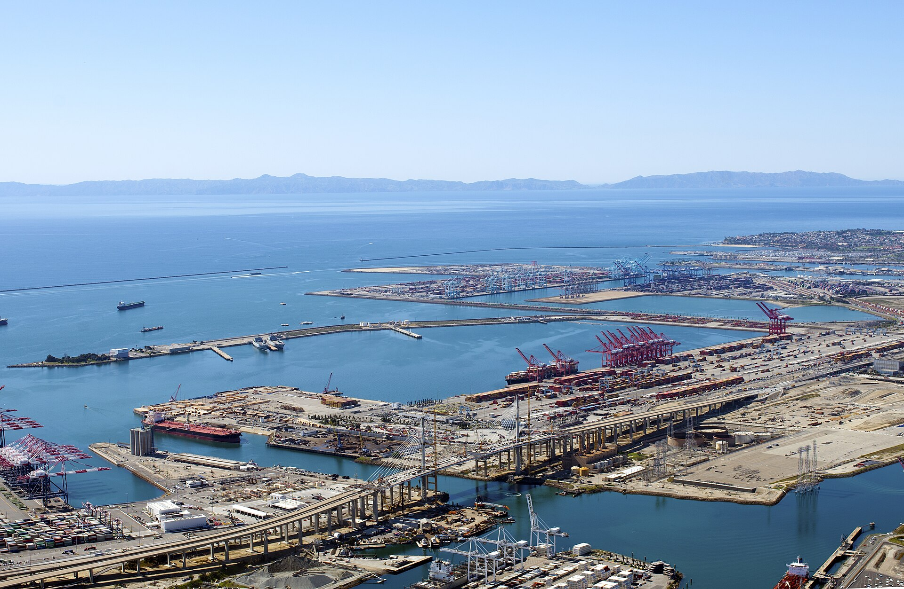
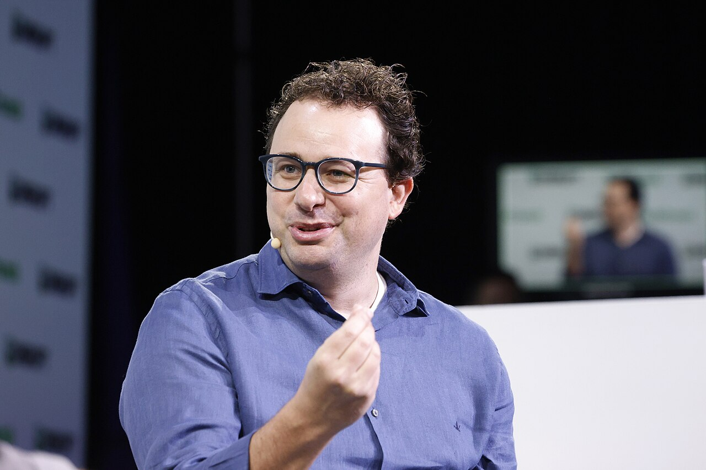
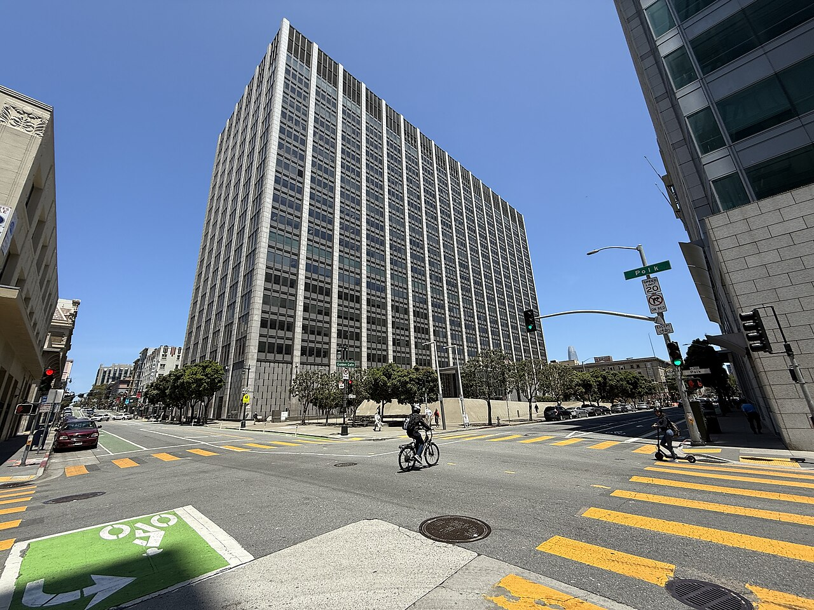

Vol. I · No. 182 · Thursday, November 26, 2026 · 12 items · 9.5 min read
Washington proposes tariffs on 14 economies to rebuild the wall the Supreme Court knocked down; a judge calls the FCC’s review of ABC retaliation; a US-backed group signs for Lukoil’s foreign empire; and baseball sues its own players before the lockout.
The World · Washington · cross-spectrum: CR
Washington proposes tariffs of up to 20 percent on 14 economies, rebuilding the global wall the Supreme Court struck down

The Port of Long Beach, California. Don Ramey Logan, CC BY-SA 4.0 / Wikimedia Commons
The Trump administration on Wednesday proposed new tariffs on 14 major trading partners, with the highest rate, 20 percent, aimed at China, Reuters reported. The Office of the US Trade Representative named the European Union, Japan, South Korea, Taiwan, Switzerland, India, Vietnam, Indonesia, Malaysia, Thailand, Cambodia, Bangladesh and Singapore alongside China, at the end of a investigation of 16 partners. Vietnam also faces 20 percent. The specific rates were to be published in the Federal Register on Wednesday.
The so-called issue of ‘industrial overcapacity’ does not really exist.
Guo Jiakun, Chinese Foreign Ministry spokesperson, via Fox Business, Nov. 25
China’s duties would come on top of the it already pays, but the new tariffs would not stack on the 10 and 12.5 percent duties imposed in July on 60 trading partners, Fox Business reported. Rates for allies stay within the , Reuters said. were left off for now. A hearing comes before anything takes effect, which could push implementation into January. China rejected the accusations, saying its exports reflect competitive advantages.
Reuters said the package is widely viewed as rebuilding the global tariffs the struck down in February. In a separate action, Trade Representative Jamieson Greer proposed ending an exemption for finished Brazilian aircraft, with a 10 percent tariff, and raising sugar duties, with comments due Dec. 30 before a Jan. 14 hearing. “After over a year of talking, Brazil has made no meaningful progress toward addressing the harmful trade practices,” Greer said. Stocks fell the same day on a technology selloff; the Nasdaq dropped as much as 4.6 percent before closing down 0.62 percent, Yahoo Finance reported.
Law & the Courts · Washington · cross-spectrum: CLR
A federal judge blocks the FCC’s early review of eight ABC station licenses, calling it retaliation for disfavored speech
Judge Loren AliKhan of the federal district court in Washington on Wednesday issued a preliminary injunction halting the Federal Communications Commission’s accelerated review of eight ABC station licenses, Politico reported. The licenses are not up for until 2028 at the earliest. “This is not a close case,” she wrote, holding that the FCC “may not retaliate against or punish Plaintiffs and other broadcast license holders for disfavored speech.”
AliKhan rejected the argument that Disney is too rich to be intimidated: “Any broadcaster of ... would not hesitate to think twice.” She found the threats had already shaped ABC’s choices about airing Trump speeches and booking “The View.” Chairman Brendan Carr said he began the review out of frustration with Disney’s response to a diversity-hiring probe; the judge said he appeared to treat Trump’s rhetoric as “his marching orders.” The government argues the court lacks , the likely issue on appeal.
AI
Who builds the next model
AI · San Francisco
Amodei calls claims that Anthropic would surrender human free will to AI “absurd,” and says self-building AI may need limits

Dario Amodei at TechCrunch Disrupt in 2023. TechCrunch, CC BY 2.0 / Wikimedia Commons
chief executive Dario Amodei on Wednesday called “absurd” the claims that his company wants people to “surrender human free will” to AI, in a long post on X, TechCrunch reported. “We should never sacrifice legitimacy or self-determination at the altar of efficiency or security,” he wrote, and he accused rivals of “vibes-based commercial and political positioning” that borrows the language of human control without changing how they race.
He was answering Sam Altman, who said this month he wants people to keep “agency over the future,” and Meta’s Alexandr Wang, who warned against a “handover” to AI. On , Amodei wrote that “we may want limits on this process,” and said Anthropic does not expect it to be safe for Claude to build later frontier models fully autonomously. Claude wrote more than 80 percent of the code Anthropic merged in June, TechCrunch said, and found this month that its models are improving at about twice their historical rate.
AI · Washington
The FCC authorizes SpaceX to put up to one million AI data-center satellites in orbit
The Federal Communications Commission on Wednesday authorized SpaceX’s Starmind constellation of up to 1,000,000 solar-powered, laser-linked satellites in low Earth orbit, Gizmodo reported, the first FCC approval of a full orbital data-center network. Chairman Brendan Carr said it “opens a bold new frontier for the computing infrastructure needed to power America’s leadership.” SpaceX must have half the network up by November 2038 and all of it by 2040, and targets a first Starship launch in the third quarter of 2027. The FCC refused to let it leave dead satellites in and declined a full .
Markets & Deals
Sanctions write the terms
Markets & Deals · Washington
A Boehly-led group backed by a US agency signs a $10 billion share swap for Lukoil’s foreign empire
A Lukoil station in South Philadelphia. Molly Des Jardin, CC BY 2.0 / Wikimedia Commons
A consortium led by Todd Boehly’s Eldridge signed a deal on Wednesday to buy Lukoil International, the sanctioned Russian oil company’s overseas arm, with the US as a partner, Reuters reported. The group will swap $10 billion of Lukoil securities, bought from US and UK funds and depositary banks, for the assets. The shares go into an , not to Lukoil. Two sources value the portfolio at about $16 billion.
The assets span about 40 countries, with upstream output of about 350,000 barrels a day, refineries in the Netherlands, Bulgaria and Romania, and about 2,000 retail stations, some in the United States. The government takes a profit share once investors recover their capital plus an agreed return, and gets a board seat. The deal needs an and a national-security review, and closing could take up to a year. The venture will be renamed.
Markets & Deals · New York
Core inflation runs hot at 3.3 percent and the $44 billion 7-year sale tails, leaving a December hike nearly certain
Core PCE prices rose 3.3 percent in the year to October, above the 3.2 percent expected, and headline PCE rose 3.8 percent, the most since 2023, Yahoo Finance reported. Third-quarter GDP was revised up to 4.3 percent, and jobless claims fell 13,000 to 189,000, Reuters reported. The Treasury’s $44 billion 7-year note cleared at 4.708 percent, a , with indirect bidders at 58.2 percent. The 10-year yield still fell about 7 basis points, to roughly 4.82 percent, as technology shares sold off, and priced about 98 percent odds of a quarter-point hike on Dec. 9.
Markets & Deals · New York
Freshfields matches Cravath in full while Skadden thanks associates for its AI spending and announces no raises
Freshfields matched Cravath’s scale in full on Wednesday, with 2027 base salaries of $235,000 to $455,000, year-end bonuses of $15,000 to $115,000 and of $11,000 to $40,000, paid Dec. 18, Above the Law reported. Skadden’s managing partner, Jeremy London, sent a Thanksgiving note citing “significant investments” in laterals and “technology and AI capabilities,” with no pay chart. Ashurst Perkins Coie set special bonuses of $6,000 to $25,000, matching , while Fish & Richardson and Pillsbury also moved on pay.
Law & the Courts
What the arbitration clause covers
Law & the Courts · San Francisco
Robinhood cannot force sports-contract customers into arbitration, a judge rules, because gambling is not what the CFTC regulates

The Phillip Burton Federal Building and courthouse in San Francisco. Marincyclist, CC BY-SA 4.0 / Wikimedia Commons
Judge Edward Chen of the federal district court in San Francisco on Wednesday denied Robinhood’s motion to compel arbitration against 10 of 11 named plaintiffs in four consolidated proposed class actions over its sports event contracts, Bloomberg Law reported. The customers had agreed to arbitrate only “disputes about contracts regulated by the CFTC,” Chen wrote, and “[g]ambling falls outside what the CFTC regulates.” With no , scope was his to decide. The plaintiffs sue under loss-recovery laws in New Jersey, New York and Michigan modeled on a .
The World
Courts and capital
The World · Jerusalem · single-tier coverage: C
Judges in Netanyahu’s corruption trial urge prosecutors to drop the bribery case and doubt a second charge
The Jerusalem District Court. Sir kiss, public domain / Wikimedia Commons
Judges at the Jerusalem District Court told Attorney General Gali Baharav-Miara on Wednesday that they do not foresee a conviction in and that it should be dropped, The Times of Israel reported. In Case 2000, involving the Yedioth Ahronoth publisher Arnon Mozes, the court said it was unconvinced the conduct was a crime and asked for more argument, and it urged a negotiated deal in . The attorney general said the trial must end in a ruling or an “appropriate arrangement.” Netanyahu called the hearing “momentous.”
The World · Brussels · single-tier coverage: C
Brussels proposes a €50 billion fund to take stakes in European AI and quantum companies, with buy-European procurement
The European Commission on Wednesday proposed a fund targeted at €50 billion to take direct equity stakes in strategic AI, quantum and deep-tech companies so they stay in Europe, Reuters reported. said it should draw another €400 billion to €500 billion. A draft Quantum Act would restrict public procurement to products from EU-controlled companies, with openings for reciprocal partners and members of the . Member states and the European Parliament must approve. Concern over “kill switches” in US products is one driver.
Entertainment & EASL
A lockout litigated in advance
Entertainment & EASL · New York
Baseball sues its players’ union to pre-clear a lockout, six days before the labor deal expires
Citi Field in Queens at night. Sam Smith, public domain / Wikimedia Commons
Major League Baseball filed a declaratory-judgment suit on Wednesday in federal court in Manhattan, asking for a ruling that a lockout is lawful under antitrust law even if the players’ union its role and that courts cannot enjoin it, Front Office Sports reported. It seeks no damages. The defendants are the MLB Players Association and eight players on its executive subcommittee, including . The labor agreement expires at 11:59 p.m. on Dec. 1.
MLB calls a disclaimer a “sham” and says the union could file one on Monday or Tuesday; the complaint says it wants to “proactively disarm the union’s nuclear option.” Spokesman Glen Caplin called the suit “a defensive measure.” Bruce Meyer, the union’s interim executive director, called it “completely frivolous.” Owners want a salary cap and floor. MLB.com said , the union’s outside counsel, runs the disclaim-and-sue playbook. Baseball has lost no games to a stoppage since 1995.
Entertainment & EASL · Los Angeles
“Sunrise on the Reaping” sets a franchise Tuesday record as Disney’s “Hexed” opens the Thanksgiving frame
Lionsgate’s “Sunrise on the Reaping” took $15.98 million on Tuesday, a franchise record that edged “Catching Fire” by $20,000, for $148.1 million domestic, Deadline reported, and is projected at $85 million or more over the five-day holiday. Disney’s “Hexed,” budgeted above $200 million, drew an estimated $7.8 million on Wednesday against a five-day projection of $35 million to $45 million. Netflix’s , directed by David Fincher with Brad Pitt, took about $1 million from 251 before it streams on Dec. 23.
Compiled by Matthew Yellin · mattyellin.com · Est. May 2026 · A cross-spectrum brief drawn each morning from wires, filings, and the trade press